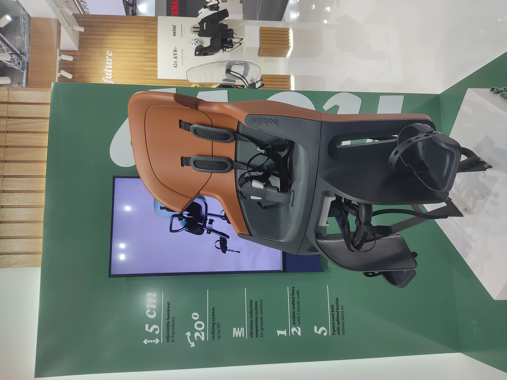

Eurobike 2024, Day 1
It’s summer again and that means the world of cycling congregates in Germany for Eurobike.
The switch from Friedrichshafen to Frankfurt has been very welcome on my end, Lake Constance may be nice but in many regards it was what Berliners call “JWD” (janz weit draußen, way out). Every year the Lake Constance highway would be inevitably clogged on sunday night by the collective masses trying to get to Frankfurt.
It thus seemed only prudent to move the show to where everybody wanted to be anyhow.
I’m doing the full 3 vendor days and figured I might as well add my observations and opinions to the deluge of those already out there.
BOBike was showing off their new flagship child seat, the name has since eluded me.  The seat comes with all of